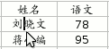
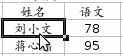
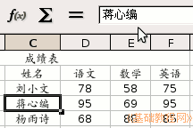
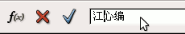
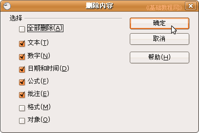
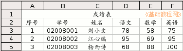

OpenOffice.org 教程之 Calc 电子表格
作者：TeliuTe 来源：基础教程网
五、编辑修改 返回目录 下一课表格输入中，有时候需要对数据进行修改，或改正一些错误，下面我们来看一个练习；
1、启动Calc
1）点击点菜单“应用程序－办公－OpenOffice.org 电子表格”；
2）点菜单“文件－打开”命令，在自己的文件夹中找到上次保存的“成绩表”文件，打开它；
2、编辑修改
1）先修改姓名里的，选中“刘晓文”，瞄准双击鼠标，这时候文字中间出来一条竖线插入点，表示处于文字编辑状态；

把插入点竖线移到“晓”的前面，按一下键盘上的Delete键，删除这个字，然后重新输入一个“小”，按一下回车键；

2）选中“蒋心编”的单元格，这时表格上边的编辑栏中也有一个“蒋心编”，把鼠标移上去，在“蒋”的后面单击一下，

出现插入点竖线后，按一下退格键，删除它，再输入“江”，然后点一下左边蓝色的“勾”确定；

3）再点一下右下角的单元格的“85”，按一下Delete删除键，在出来的对话框里点“确定”，

然后输入“100”，也可以直接输入100替换；

保存一下文件；
本节学习了编辑和修改单元格内容的基本操作，如果你成功地完成了练习，请继续学习下一课内容；
本教程由86团学校TeliuTe制作|著作权所有
基础教程网：http://teliute.org
美丽的校园……
转载和引用本站内容，请保留版权信息和本站链接。